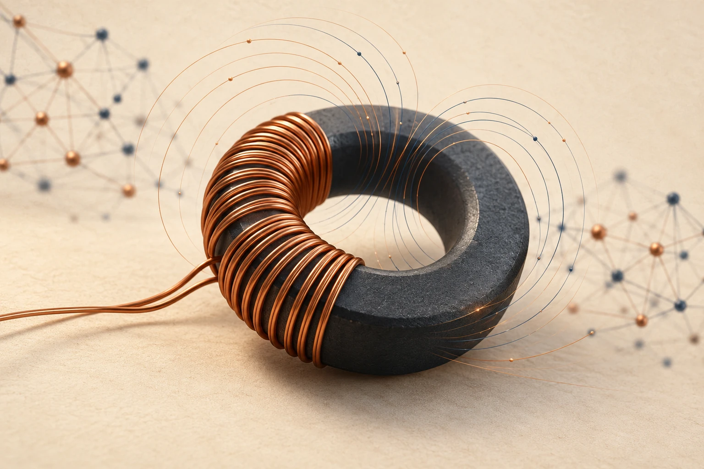

A first look
From magnetic behavior to a learned core-loss model.
Magnetic waveforms, temperature, and frequency become the inputs to an AI model of volumetric core loss.
Full workshop opens ahead of IEEE APEC 2027

The case study
We’ll use MagNet Challenge core-loss measurements to explore how to vibe code an AI model to learn relationships between magnetic excitation and core loss.
InputsMagnetic flux density waveform B(t), temperature, and frequency
ModelFeedforward neural networks and Generalized Steinmetz equation
OutputVolumetric core loss Pv, in W/m³
The hands-on prompts and experiments are coming with the full workshop.
Back to Overview